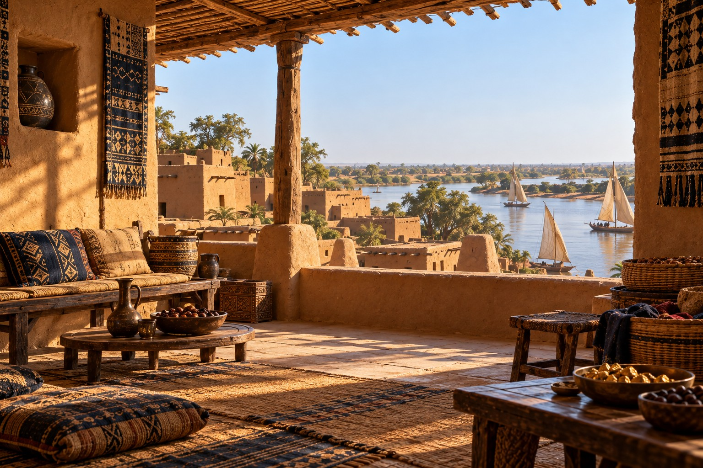

1305 — Mali Empire
West Africa · An imagined merchant household

Behind the Investigation:
Research Note
Behind the Investigation explains the generative AI capabilities, technologies, and design decisions demonstrated by each Institute investigation.
Prompt Method Used
Grounded historical prompting: broad evidence about the Mali Empire and trans-Saharan commerce informed an interpretive domestic scene. Individual furnishings and architecture are not asserted as verified for 1305.
Skill Demonstrated
Historical Synthesis & Visual Storytelling. Combining scholarly context, AI-assisted illustration, and evidence-conscious interactive interpretation.
Research Question
How can an imagined prosperous Sahelian household communicate the commercial sophistication of the Mali Empire without presenting invented details as historical fact?
How It Works
Visitors select four features of the scene: trade vessels, household goods, textiles, and the exterior landscape. Each opens context, uncertainty notes, and source links. Gentle daylight particles and river effects animate separately from the artwork.
What This Demonstrates
Research-informed storytelling that resists reductive depictions of African history while making the limits of reconstruction visible.
Technical Implementation
The illustration was created with generative AI. Hotspots, information panels, and CSS ambient motion use deterministic browser code. No live language model runs when a visitor interacts.
Historical Limitations
This is an imagined setting rather than a reconstruction of an excavated house. The precise form of the riverfront, skyline, boats, carved furniture, vessels, and textile patterns has not been established for a merchant household in 1305. Later architectural forms must not be treated as medieval evidence.
Representation Audit
Intent: Show prosperity, craft, trade, and domestic calm without portraying Africa as a single culture or reducing the Mali Empire to royal gold.
Pending: Specialist review of river geography, city architecture, textile patterns, furniture, manuscripts, vessel types, and chronology. The depicted settlement is not identified as a verified view of Timbuktu or Djenné in 1305. The image is a visual hypothesis, not archaeological documentation.